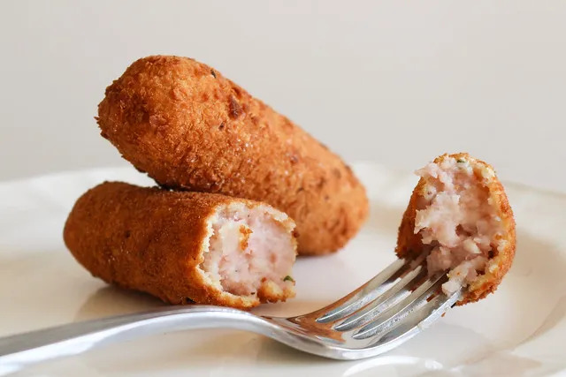

Cuban Croquetas
Home
">
Croquetas are a beloved Cuban dish, known for their crispy golden-brown exterior and irresistibly
creamy filling. These bite-sized delights are typically made with a rich béchamel base, combined with finely minced ham, chicken,
or fish, then coated in breadcrumbs and fried to perfection. The result is a crunchy shell that gives way to a velvety,
savory center bursting with flavor. Popular as both a snack and a breakfast staple, croquetas are often enjoyed with
Cuban coffee or paired with a squeeze of lime for an extra zesty kick. Their versatility and comforting taste make them a
cherished part of Cuban cuisine, found in bakeries, cafeterías, and family gatherings alike.
What makes Cuban croquetas stand out is their smooth, melt-in-your-mouth texture, achieved by carefully blending the filling
and allowing it to chill before shaping. Unlike other variations, they rely on a thick, flavorful roux rather
than mashed potatoes, giving them a uniquely creamy consistency. The breadcrumb coating provides a satisfying
crunch that contrasts beautifully with the soft interior, making each bite an explosion of texture and taste.
Whether served as an appetizer, side dish, or even tucked into a sandwich, croquetas are a timeless favorite that brings a taste
of Cuba to any table
Ingredients
For the Filling
- 2 cups finely minced cooked ham (or chicken, fish, or beef)
- 4 tablespoons unsalted butter
- ½ cup finely diced onion (optional, for extra flavor)
- ½ cup all-purpose flour
- 1 ½ cups whole milk (warm)
- ¼ teaspoon nutmeg (optional, for depth of flavor)
- ½ teaspoon salt (adjust to taste)
- ½ teaspoon black pepper
- ½ teaspoon garlic powder
For the Coating
- 2 large eggs (beaten)
- 1 cup fine breadcrumbs (plus more if needed)
For Frying
- Vegetable or canola oil (for deep frying)
Steps
1. Make the Filling (Bechamel)
- In a large skillet, melt 4 tablespoons of butter over medium heat.
- (Optional) If using onions, sauté ½ cup of finely diced onions in the butter until soft and translucent (about 2-3 minutes).
- Gradually add ½ cup of flour, stirring continuously to form a roux. Cook for about 1-2 minutes to remove the raw flour taste.
- Slowly pour in 1 ½ cups of warm milk, stirring constantly to prevent lumps.
- Add nutmeg, salt, black pepper, and garlic powder, then mix well. The mixture should thicken into a smooth paste.
- Stir in 2 cups of finely minced ham until well incorporated. Continue cooking for another 2 minutes, then remove from heat.
2. Chill the Mixture
- Transfer the filling to a bowl or baking dish and spread it evenly.
- Cover with plastic wrap, pressing it against the surface to prevent a skin from forming.
- Refrigerate for at least 3-4 hours (or overnight) until firm enough to shape.
3. Shape the Croquetas
- Once chilled, take small portions of the mixture and roll into oval or cylindrical shapes (about 2 inches long).
- Place the shaped croquetas on a tray and return them to the refrigerator for 30 minutes to firm up again.
4. Coat the Croquetas
- In one bowl, beat 2 eggs.
- In another bowl, place 1 cup of fine breadcrumbs.
- Dip each croqueta into the egg mixture, then roll it in the breadcrumbs until fully coated. For extra crispiness, repeat this step for a double coating.
5. Fry to Perfection
- In a deep frying pan, heat vegetable or canola oil to 350°F (175°C).
- Fry the croquetas in small batches for 2-3 minutes until golden brown. Avoid overcrowding the pan.
- Use a slotted spoon to transfer them to a plate lined with paper towels to drain excess oil.
6. Serve and Enjoy!
- Serve warm, optionally with a squeeze of lime, mustard, or a side of Cuban bread.